1School of Computing Science, University of Glasgow, Glasgow, UK
2Institute of Health and Wellbeing, University of Glasgow, Glasgow, UK
The video below presents an example of the interaction data used in this project. Left: raw video illustrating child–caregiver interaction dynamics. Middle: automatically extracted and tracked body keypoints. Right: the de-identified behavioral representation used for analysis.
Reactive Attachment Disorder (RAD) is a serious attachment-related condition that can develop in early childhood, particularly among children who have experienced severe neglect, maltreatment, or disrupted caregiving relationships. Children with RAD may show difficulties in forming healthy emotional bonds, reduced social responsiveness, and atypical interaction patterns with caregivers.
Early diagnosis is important because attachment difficulties in early childhood can have long-term consequences for emotional development, mental health, and social functioning. However, conventional assessment often requires substantial clinical expertise and time-intensive observation. Our research explores how multimodal and interpretable AI methods can support the analysis of child-caregiver interactions for RAD assessment.
Our dataset was constructed from clinically assessed child interaction recordings for Reactive Attachment Disorder (RAD) research. After data quality checks and eligibility screening, 275 children were retained, contributing 723 recorded sessions and around 2,892 minutes of video data.
Up to 3 sessions per child:
• Child–caregiver play: naturalistic interaction during free play, capturing relational behaviours and engagement patterns.
• Child–caregiver lunch (mealtime): everyday interaction context reflecting routine communication and responsiveness.
• Child–researcher WPPSI session: structured cognitive assessment capturing task-oriented behaviour and interaction with a non-caregiver adult.
A 4-minute clip was selected from each recording, requiring
both participants to be clearly visible and no third party present.
Each child received a binary RAD label based on established clinical measures: Rating for Inhibited Attachment Behavior (RInAB) (Corval, Belsky, Baptista, Mesquita, & Soares, 2019) and Disturbances of Attachment Interview (DAI) (Smyke, Dumitrescu, & Zeanah, 2002).
For AI experiments, we used a balanced subset of 100 children: 50 RAD and 50 non-RAD, contributing 300 sessions.
To ensure privacy, all video data were de-identified using pose estimation, representing each frame as 2D body keypoints. This removes identifiable visual information while preserving interactional movement patterns for analysis.
To support AI-based analysis while protecting participant privacy, all video recordings were converted into a de-identified behavioral representation based on body movement over time.
Instead of analysing raw video frames, each frame was represented using 2D body keypoints extracted from pose estimation for both the child and the caregiver. This removes identifiable facial and background information while preserving the movement and interaction patterns needed for behavioural analysis.
To model child–caregiver interaction more explicitly, these body keypoints were organised as a graph-based structure. Each keypoint is treated as a node, with links capturing both within-person body structure and between-person interactional relationships. This allows the model to represent posture, orientation, and coordinated movement while maintaining anonymity.
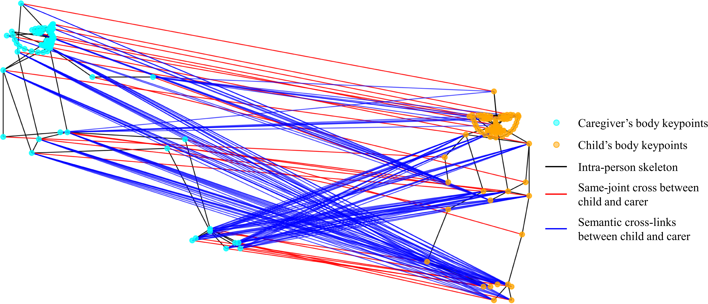
Example of the de-identified graph-based body representation. Body keypoints represent the child and caregiver, while links capture both within-person skeletal structure and cross-person interactional relationships. This representation preserves behavioural dynamics while removing personally identifiable visual information.
The model explains child–caregiver interaction through interpretable behavioural patterns. Each pattern is illustrated with examples of Lower and Higher scores.
Measures the normalized physical proximity between the child and caregiver. Lower scores indicate closer proximity, while higher scores indicate greater distance between them.
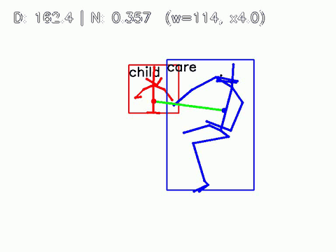
Closer proximity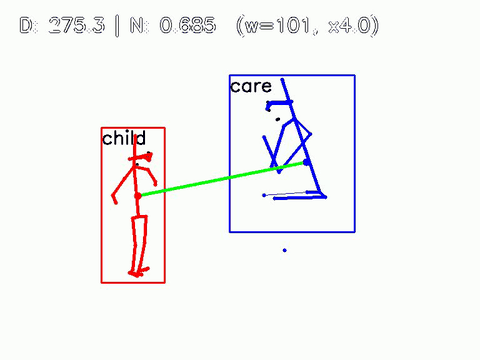
Greater distanceMeasures the alignment of the child’s head orientation toward the caregiver. Lower scores indicate the child is looking away, while higher scores indicate the head is directed toward the caregiver.
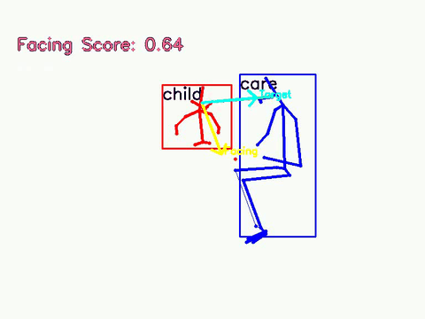
Looking away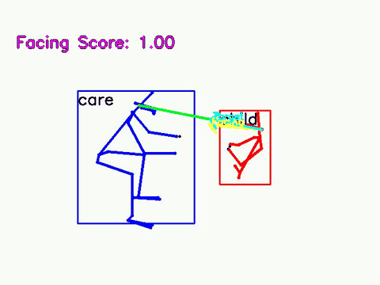
Looking directlyMeasures the alignment of the child’s torso orientation relative to the caregiver. Lower scores indicate the body is turned away, while higher scores indicate the body is oriented toward the caregiver.
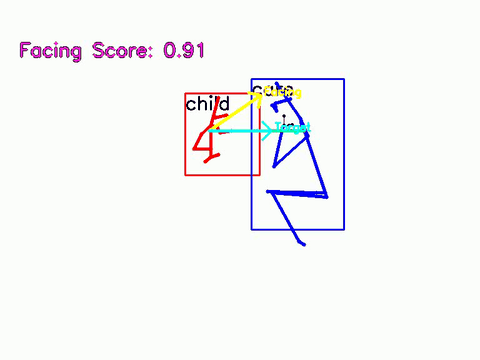
Turned away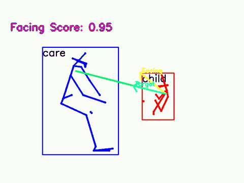
Oriented directlyMeasures how open or closed the child’s posture is based on body configuration. Lower scores indicate a more closed or contracted posture, while higher scores indicate a more open and expanded posture.
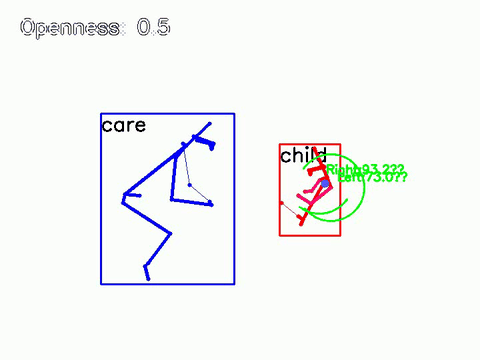
Closed posture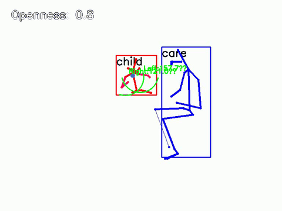
Open postureMeasures the degree to which the child leans relative to the caregiver. Lower scores indicate leaning back, higher scores indicate leaning toward the caregiver, while scores around 0.5 indicate an upright posture.
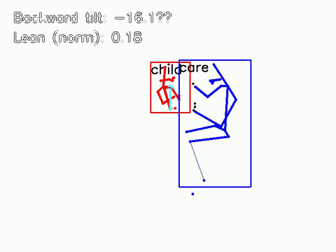
Leaning back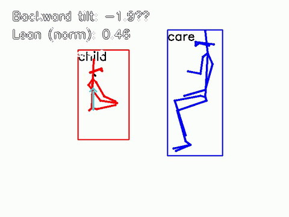
Upright postureIs an estimation of self-adaptors, which measures the extent to which the child’s body or face is occluded by their own limbs or posture. Lower scores indicate minimal self-adaptors, while higher scores indicate greater self-adaptors.
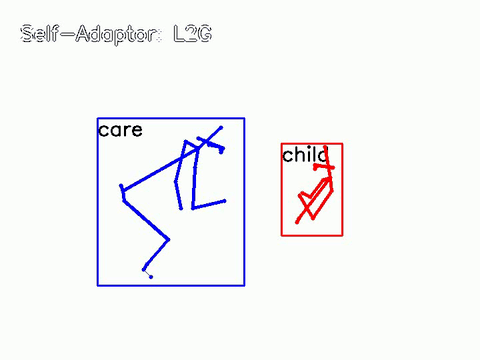
Minimal self-adaptors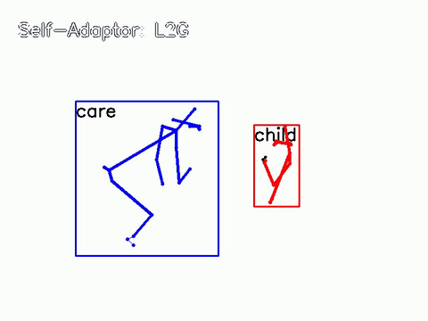
Greater self-adaptorsOur AI framework follows a two-stage design to analyse child–caregiver interaction in a structured and interpretable way, transforming low-level signals into clinically meaningful behavioural patterns.
De-identified body movement and audio signals are transformed into behavioural features (e.g., proximity, orientation, posture). These are integrated over time to produce a session-level summary and prediction, with feature contributions estimated to support interpretation.
Summaries from multiple interaction contexts (play, lunch, and WPPSI) are combined to generate a final child-level prediction, capturing behaviour across different situations.
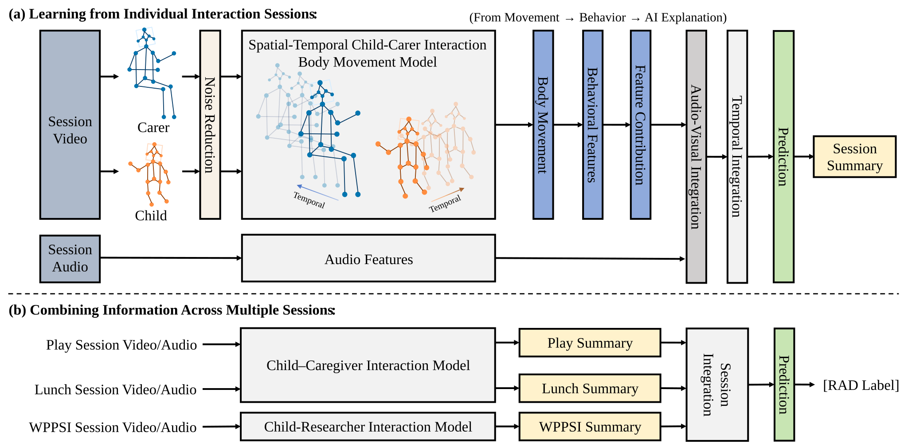
Overview of the AI-based framework. In Stage 1 (top), each session is analysed using de-identified body movement and audio to extract interpretable behavioural features and generate a session-level summary. In Stage 2 (bottom), summaries from multiple sessions are integrated to produce a final child-level prediction of RAD.
This project builds on ongoing research in AI-based analysis of child–caregiver interaction, as well as clinical work on attachment disorders and early intervention.
Graph-based Child-Caregiver Interaction Modeling for Automated Attachment Disorder Assessment for Maltreated Preschoolers Placed in Foster Care
Under review — paper available soon.
Crawford, K., Young, R., Wilson, P., Deidda, M., Forde, M., Millar, S., et al. (2025).
Infant mental health services for birth and foster families of maltreated
pre-school children in foster care (BeST?): a cluster-randomized phase 3
clinical effectiveness trial.
Nature Medicine, 31(5), 1617–1625.
View Paper
Bruce, M., Young, D., Turnbull, S., Rooksby, M., Chadwick, G., Oates, C., et al. (2019).
Reactive attachment disorder in maltreated young children in foster care.
Attachment & Human Development, 21(2), 152–169.
View Paper
For questions about the project please contact:
Xinyu Li
University of Glasgow
2637150L@student.gla.ac.uk